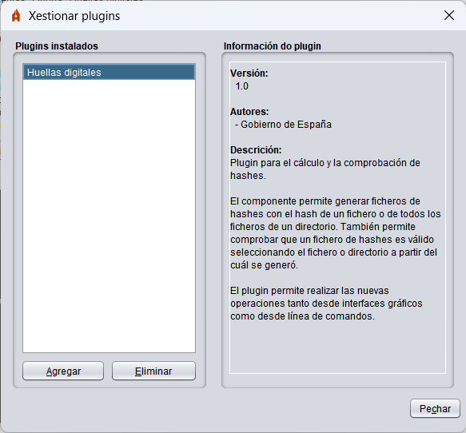

Autofirma integra un sistema sinxelo de plugins que permite aos usuarios integrar nos seus procesos de firma plugins desenvolvidos por eles mesmos ou por terceiros. Estes plugins permiten integrar un preproceso dos datos antes de asinar, un postproceso despois da firma e distintas operacións desligadas do proceso de firma pero que poden ter como entrada os datos cargados polo usuario, a firma xerada, os certificados utilizados para asinar ou os propios certificados contidos nas firmas. Estes procesos só actúan sobre as operacións de firma e firma masiva realizadas a través da interface de Autofirma. Non aplican ás firmas solicitadas desde un navegador web ou a través de liña de comandos.
NOTA: Algunhas funcionalidades anteriormente integradas en Autofirma, como o cálculo e a comprobación de hashes, distribúense agora en forma de plugins. Para ter acceso a estas funcións desde a interface gráfica de Autofirma, o menú contextual do sistema operativo ou liña de comandos será necesario instalar estes plugins.
Para xestionar os plugins instalados en Autofirma, acceda ao panel de xestión a través da opción "Ferramentas" → "Xestionar plugins" na barra de menú da aplicación. Desde este panel poderá instalar, desinstalar, configurar e consultar a información dos plugins.

Neste recuadro móstrase unha listaxe cos plugins instalados actualmente en Autofirma. Pode pulsar o botón "Agregar" da parte inferior da listaxe para instalar un novo plugin ou ao botón "Eliminar" para desinstalar o plugin seleccionado na listaxe. A instalación e desinstalación de plugins ten efecto inmediato. Ao seleccionar un plugin da listaxe, mostrarase a información do mesmo no panel "Información do plugin".
Neste panel móstrase a información do plugin seleccionado nos listado "Plugins instalados". Esta información conta co número de versión do plugin, os autores, a información de contacto e unha descrición. Algúns destes datos poden omitirse se o plugin non informa deles.
Opcionalmente, se o plugin permíteo, pode aparecer un botón "Configurar" na zona inferior do panel. Este botón abre o diálogo de configuración definido polo propio plugin. Se un plugin non admite configuración, non aparecerá este botón.
Os plugins poden definir certos permisos e realizar diversas tarefas para a súa instalación e desinstalación. É posible que algúns plugins non teñan efecto ata que se reinicie a aplicación.